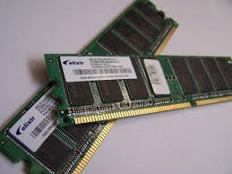

Arbetsminne
All information som processorn ska ha snabbt ligger i arbetsminnet. Informationen som lagras som t.ex. datorprogram i arbetsminnet töms när datorn stängs av. Arbetsminnet kallas även RAM (Random Access Memory), eller primärminne. Ett bra arbetsminne är 8 GB, men det allra bästa är på 16 GB. Arbetsminnen är väldigt snabba men de brukar oftast vara väldigt dyra och man fortsätter fortfarande med att forska om hur man kan förbättra de.